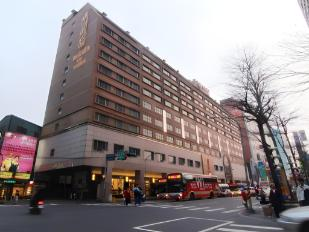

|
Untuk Bahasa Indonesia kami diminta untuk membuat teks resensi tentang hotel atau restoran yang kami kunjungi. |
|  |
|
Saya memilih Tao Garden hotel, salah satu hotel yang kami kunjungi sebagai topik resensi saya. |
|
Saya dengan teman saya telah mewawancarai seseorang tetapi dia sudah meminta untuk tidak difoto. Jawaban dia ada di segmen Inti. |
PembukaTao Garden Hotel adalah hotel yang terletak di Kota Taoyuan dan berdiri dari tahun 2013. Ini adalah hotel yang kami kunjungi yang terdekat dari bandara dan juga MRT. Hotel ini memiliki 240 kamar dan juga fasilitas seperti gym. |
IntiKelompok usia yang paling banyak saya lihat adalah Kelompok usia 40+. Hotel ini memiliki kamar yang nyaman. Hotel lainnya yaitu Fullon Hotel Shenkeng yang memiliki kamar yang lebih besar. Selanjutnya adalah Park City Taichung yang memiliki kamar yang lebih bagus. Pelayanan di Tao Garden Hotel cukup baik, kebersihannya cukup baik dan memiliki akses yang mudah ke MRT dan bandara. Salah satu kekurangannya adalah ukuran kamarnya yang kecil. |
PenutupMenurut saya, ketiga hotel yang kami tinggali memiliki kualitas yang baik, masing-masing hotel memiliki kelebihan masing-masing. Rekomendasi saya adalah Park City Taichung karena memiliki kamar yang bagus dan tidak terlalu besar atau terlalu kecil. |